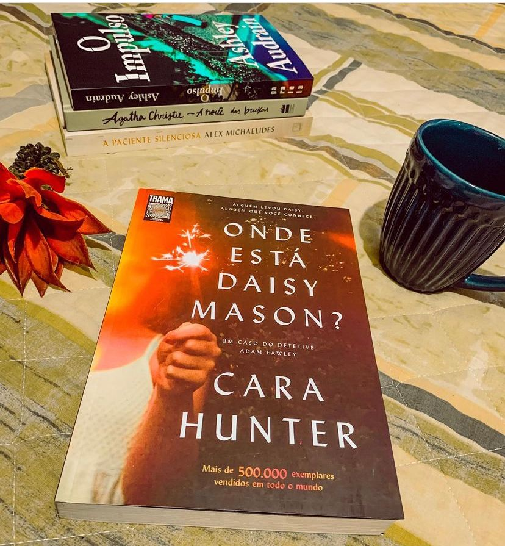

Onde Está Daisy Manson?
Este livro me chamou atenção depois de uma resenha da @belrodrigues13, eu procurava um livro para ter inspiração em um trabalho do curso que estou fazendo, e MEU DEUUUUUUUUS o livro me prendeu do começo ao fim. Sabe aqueles livros que você simplesmente não consegue parar de ler?
Ontem à noite, Daisy Mason, uma garotinha de oito anos de idade, desapareceu de uma festa de família. Ninguém naquela discreta e silenciosa rua residencial viu nada ― ao menos é o que estão dizendo. Mas como é possível uma criança desaparecer sem deixar rastros? O detetive Adam Fawley precisa manter a mente aberta e desconfiar de cada ação suspeita. No entanto, ele sabe que, em cada dez casos como este, nove revelam que o culpado é alguém que a vítima conhece. Isso significa que alguém está mentindo… e que, para Daisy, o tempo está se esgotando.
O livro apresenta dramas familiares, investigação e a forma como Cara Hunter consegue conduzir a história do começo a fim sem deixar o livro cansativo é maravilhosa. Ela consegue adicionar pequenos “Plots” que são totalmente palpáveis para história e não deixa a trama enjoativa, até você chegar ao grande final para descobrir o que realmente aconteceu a Daisy Mason!